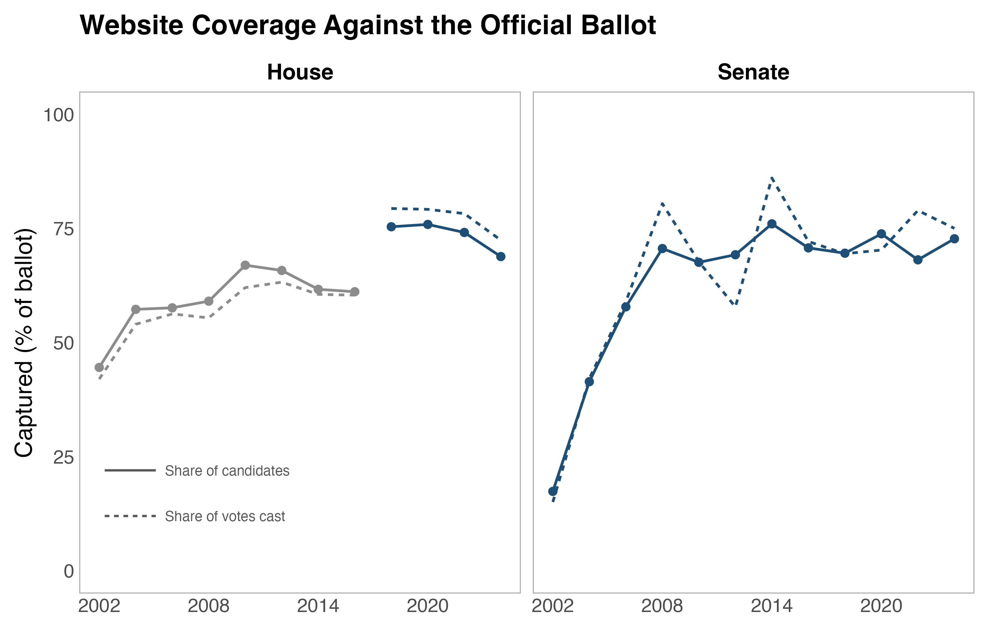
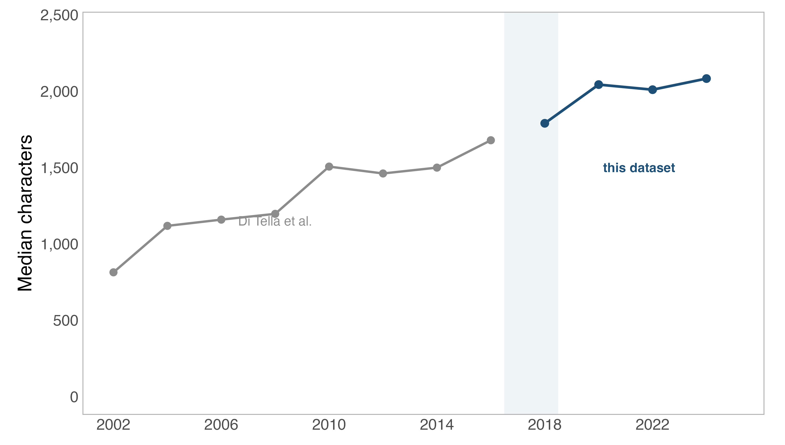
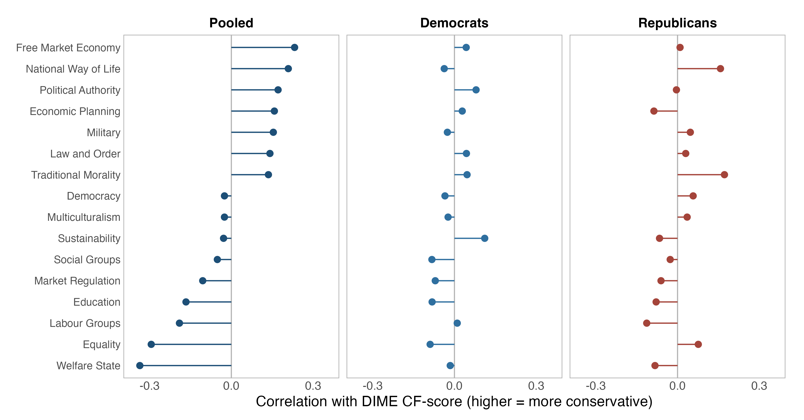
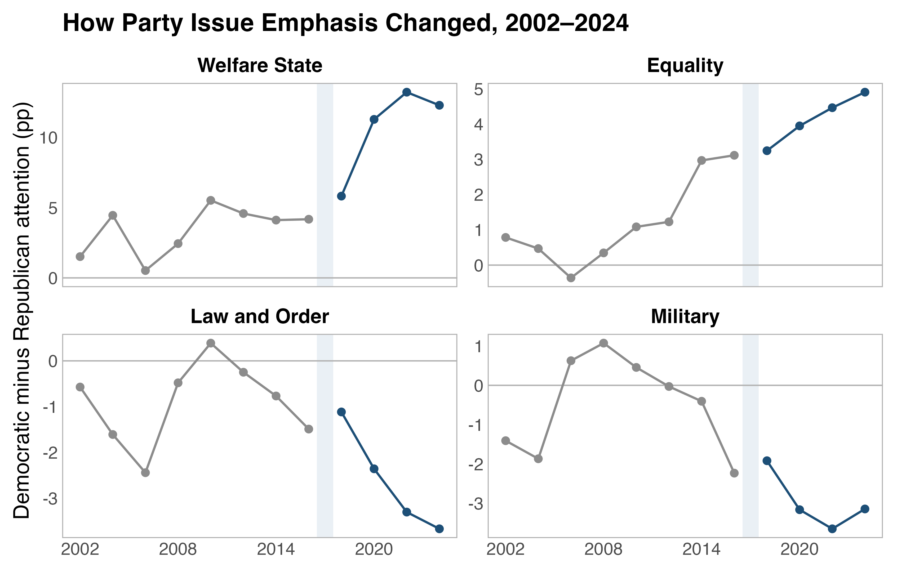
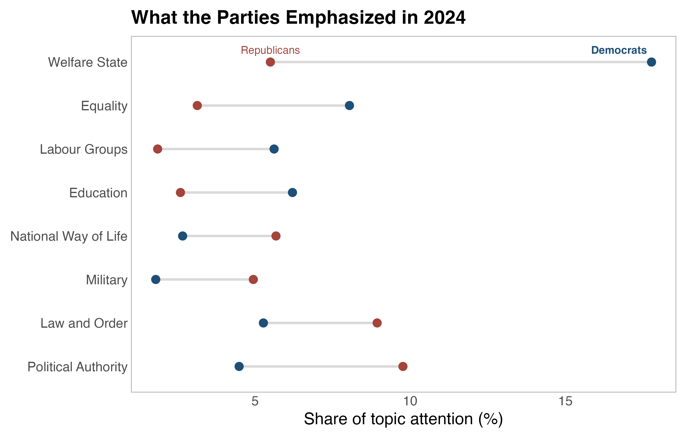
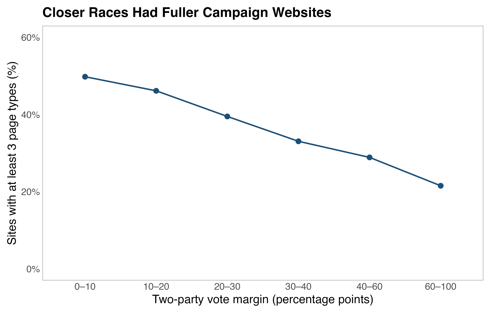

This dataset compiles 799,058 archived pages for 7,353 U.S. House and Senate candidate-years. The dataset expands a prior dataset, ICPSR 226001, with House candidates from 2018 through 2024 and Senate candidates from 2002 through 2024. The 2018+ House candidate dataset can be merged to the Di Tella et al. dataset to form one long panel. For questions and comments, please email hhilbig@ucdavis.edu.
How the data were built
The campaign websites were identified from FEC records and Wikidata. Site data comes from the Wayback Machine, where a crawler followed homepage links one level deep. The coded variables reproduce Di Tella et al.'s text filter and measurement rules, which enables the combined use of the two datasets.
What the data contain
- Page-level text, with its archived source URL.
- A candidate-year panel, using the longest snapshot.
- ICPSR-compatible measures of length, lexical diversity, word rarity, and attention to 31 Manifesto Project topics. These topics do not measure position or stance of candidates.
- FEC IDs for every candidate-year and DIME IDs for 79 percent.
- An attempt roster, including failed captures.
Coverage and limitations
Of 9,848 URL attempts, 7,353 yielded archived text. Capturing a website requires a findable campaign website and a Wayback Machine entry for a given election year. The data contains the initial roster, which allows users to measure coverage.
House coverage (i.e. websites captured among Democratic and Republican general-election candidates in official returns) is 69 to 76 percent from 2018 onward. Senate coverage rises from 17 percent in 2002 to about 70 percent after 2008. For House candidates, an alternative coverage measure is vote-weighted coverage, which is about four percentage points higher. This is because missing sites tend to belong to candidates who received fewer votes.

The dataset comes with a number of limitations. First, 11 percent of candidate-years contain
little or no text. To measure this, I implemented a text_quality flag. Second,
post-election pages may reflect changed domains, so the main full-site measures have
_preelec versions. Third, linked pages can come from nearby
dates. Finally, the median candidate-year spans 255 days. Pooled
comparisons are therefore more reliable than within-candidate changes.
Validation
I run a number of descriptive checks to validate the data. First, I run my cleaning and extraction pipeline on 400 candidate-years from Di Tella et al. to see if my pipeline recovers the values produced by their code. This reimplementation step reproduces their published measures:
| Measure | What it measures | Correlation |
|---|---|---|
n_char | Length of the cleaned text, in characters | 1.00 (identical) |
n_words | Length in words | 1.00 (identical) |
| TTR | Vocabulary range: distinct words divided by total words | 1.00 |
| MATTR | The same in a 200-word moving window, so length does not drive it | 1.00 |
| entropy | How rare the candidate's words are in Google Books | 1.00 |
Character and word counts are identical; the remaining correlations are at least 0.9991.
Median document length rises by seven percent at the dataset boundary, from 1,678 characters in 2016 to 1,789 in 2018. Visualizing this (see below) suggests a smooth upward trend in document length that can be observed across the two datasets.

An additional check on the validity of coded topics uses DIME CF-scores. Below, I show the correlation between CF-scores and topic attention across all candidate-years that can be linked to DIME. Topic attention correlations are as expected. I note, however, that within-party correlations are much weaker. This suggests that the topics can distinguish parties but perform worse at measuring within-party ideology.

Merging with the ICPSR data
The ICPSR-compatible panel can be appended to the 5,267 candidate-years in ICPSR 226001, producing 12,620 candidate-years. I have included R code for this here: download the merge script.
Data and documentation
The README, codebook, and manifest document the five data files. Every text row records its archived source URL.
Citation
Hilbig, Hanno (2026). U.S. House (2018-2024) and Senate (2002-2024) Candidate Websites. Version 2.0. Harvard Dataverse. https://doi.org/10.7910/DVN/BZ2JRS
Please also cite the original dataset this one extends, in case you use both of them:
Di Tella, Rafael, Randy Kotti, Caroline Le Pennec and Vincent Pons (2025). Keep Your Enemies Closer: Strategic Platform Adjustments during U.S. and French Elections. openICPSR 226001.
Exemplary descriptive applications
Below, I present a range of examples for applications of the data. First, the data can be used to assess differences in issue attention across candidates of the two parties, both at one point in time (I show 2024 here) and over time. I show this for selected topics in the two figures below.


Further, the data can be used to assess the amount of information provided by candidates on their websites. Below, I show that candidates in closer races tend to provide a larger set of page types than candidates in less competitive races.
